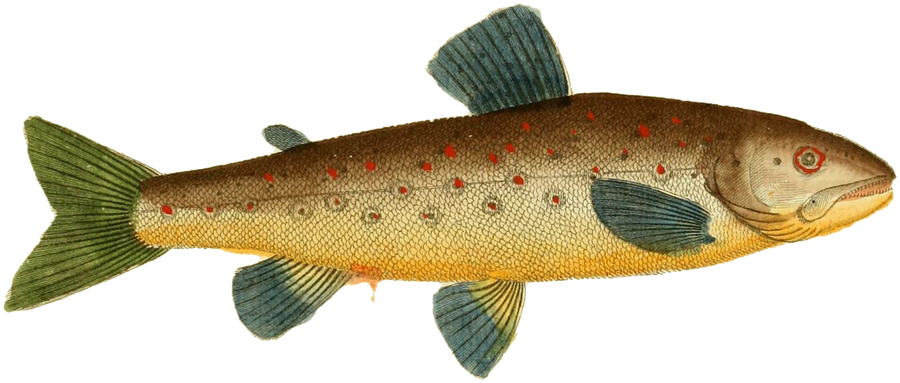

Quatre raretés
Même carte, quatre niveaux. Dans le 94, les raretés viennent des relevés de l'OFB.

Gardon
Commun24 pêches sur 29Se prend presque à chaque sortie

Brochet
Peu commun10 pêches sur 29Une sortie sur trois

Sandre
Rare3 pêches sur 29Une bonne sortie par saison

Truite fario
LégendaireJamais relevée iciÀ chercher ailleurs